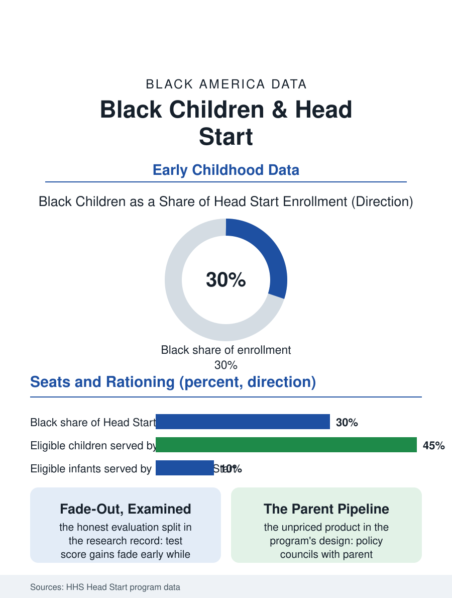

Black Education
The Unfinished Experiment: Black Children and Head Start
Head Start enrolls Black children at double their population share, rations seats to half the eligible, and produces life outcomes its test scores understate. The Head Start file.

Head Start is the federal government's flagship investment in poor children's early years, a comprehensive program of education, health, and family services operating since 1965, and Black children have always been at its center: roughly a third of Head Start enrollment is Black, about double the Black share of the preschool population. The program's data, its outcomes, its funding rationing, form the longest-running experiment in this atlas's education pages. This article reads the Head Start file.
The Comprehensive Design
Head Start was built on a theory its era's science supported and this century's has refined: that poverty's effects on a young child are simultaneously educational, medical, nutritional, and familial, so the intervention must be all four at once. The program's performance standards encode the theory, requiring not only classroom instruction but health and dental screenings, nutritious meals, developmental assessment, and structured parent engagement, delivered through local grantees, community action agencies, school districts, and nonprofits, whose quality varies as local institutions do. The enrollment data describe the rationing beneath the design: Head Start serves roughly half or fewer of eligible preschool-age children in a typical year, and Early Head Start, the birth-to-three program, a small fraction of its eligible population, so the program is a lottery the poor mostly lose, with the seats allocated by local waitlists whose demographics reflect the community organizations' reach. Black enrollment's overrepresentation is the program's founding constituency persisting across six decades: the community action agencies of the Black Belt and the urban North built Head Start into their institutional core, and the program's workforce, teachers and family workers drawn from the communities served, is one of the Black women's employment stories threaded quietly through this atlas.
The Fade-Out Argument
The program's evaluation history is the file's most contested ground, and it is recorded here at its honest weight. The large randomized study of Head Start found cognitive gains at kindergarten entry that faded statistically by the early elementary years on the test measures used, a finding that entered the policy debate as a verdict while the longer-run research complicated it: sibling-comparison and quasi-experimental studies following participants into adulthood find durable effects on graduation, health, and earnings measures, the pattern the early childhood literature calls fade-out of scores without fade-out of life outcomes. The quality variation inside the program explains part of the tension: the classroom quality data show a wide distribution, and the children in the strongest programs show the strongest persistence, implicating the funding level, Head Start's per-child spending trails the cost of the quality its standards demand, as the variable the fade-out debate should have centered. The curriculum and workforce upgrades of the last decade, degree requirements for teachers, coaching systems, and the CLASS observation regime, show in the program's own monitoring data as rising quality scores, while the compensation file, Head Start teachers paid well below public school counterparts, bleeds the workforce the standards try to build, a contradiction the appropriations process renews annually.
The Intergenerational Program
Head Start's least measured product may be its parents. The program's design recruits the family as a client alongside the child: the policy councils with mandated parent majorities govern real budgets, the family partnership workers connect households to housing, employment, and education services, and the program's alumni include a generation of Black community leadership that entered public life through a Head Start policy council meeting, a pipeline into the civic file that no evaluation has ever tried to price. The two-generation programs built on the model, pairing the child's classroom with the parent's credential program, report the compounded outcomes the theory predicts. The forward file is capacity and continuity: full-day and full-year expansion to match working parents' schedules, the Early Head Start expansion the infant data argue for, and the coordination with the state pre-K systems that have grown up beside it, with Black children often eligible for both and served by whichever has a seat. The Head Start file closes in the classroom at morning circle, in the neighborhood where the program has operated since before the teacher was born, doing the unglamorous whole-child work its founders specified in 1965. The arguments about its test scores will continue in the journals. The file's own verdict rests on the longer data: a program that feeds, screens, teaches, and organizes the poorest children and their parents together, rationed to half its eligible population by appropriations, is not a failed experiment. It is an unfinished one, and the waitlist, which is this file's truest statistic, is its standing appropriations request.
More in Black Education
Black Educational Attainment: High School Parity, the College Gap
About 89 percent of Black adults hold a high school diploma and one in four holds a bachelor's degree or higher — the attainment ladder, the college completion gap, and the generational trend.
Historically Black Colleges and Universities: Enrollment and Degrees
More than 100 HBCUs enroll roughly 290,000 students and award about one in six Black bachelor's degrees — an outsized share from a small sector. The federal education data.
Black College Enrollment: 2.4 Million Students
About 2.4 million Black students are enrolled in American colleges — nearly two-thirds of them women. The NCES enrollment data by sector, level, and trend.
Source: U.S. Department of Health and Human Services, Head Start Program Information Report; Head Start Impact Study and long-term follow-up research.